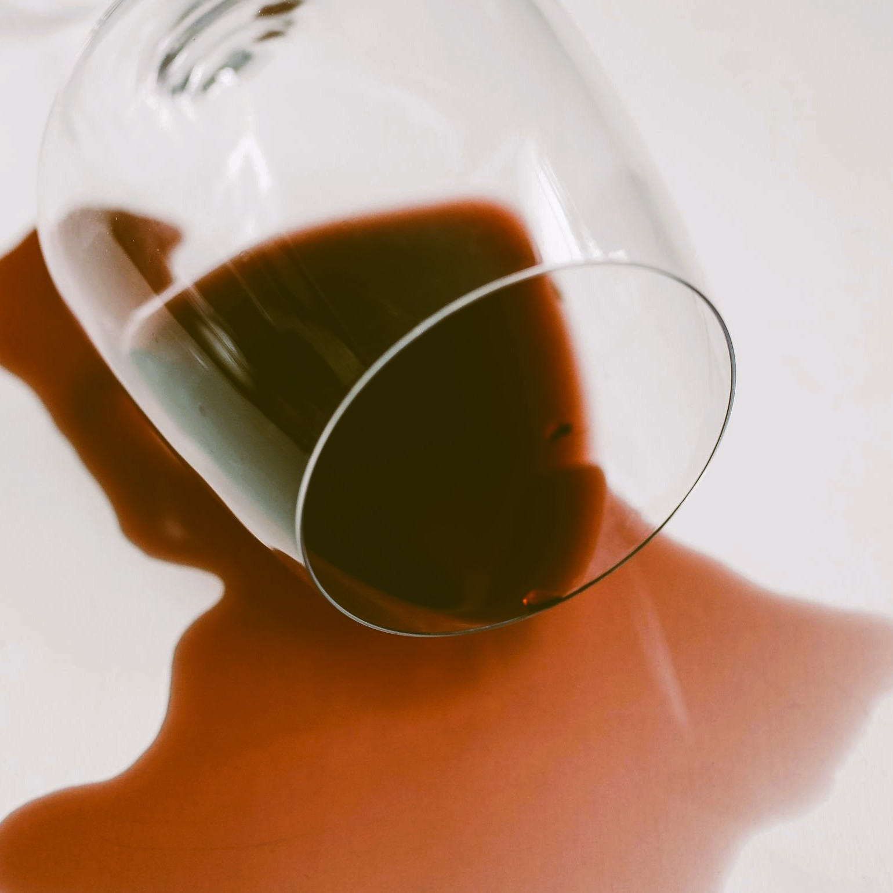
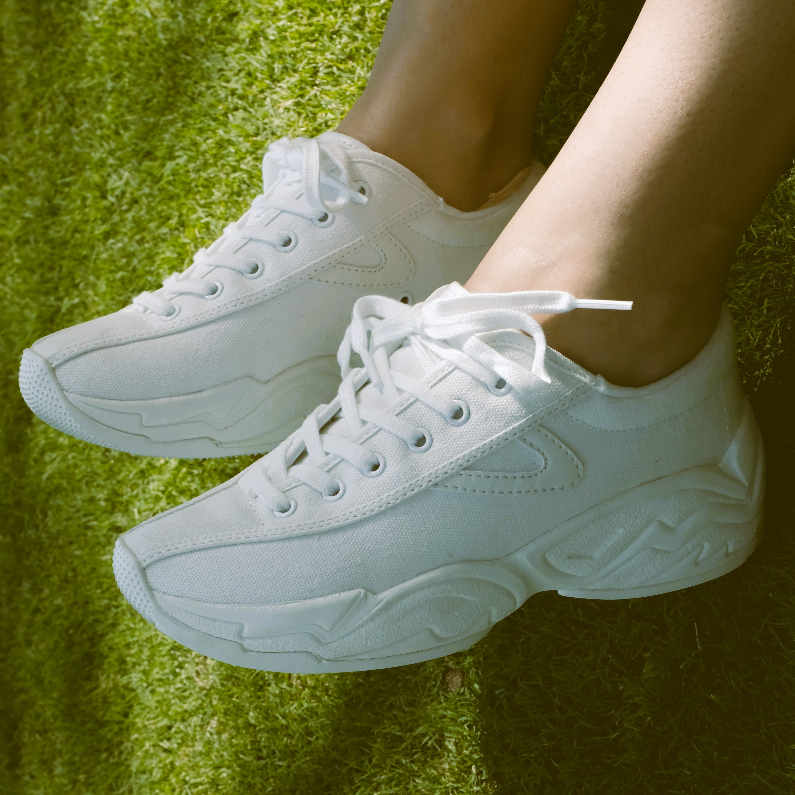
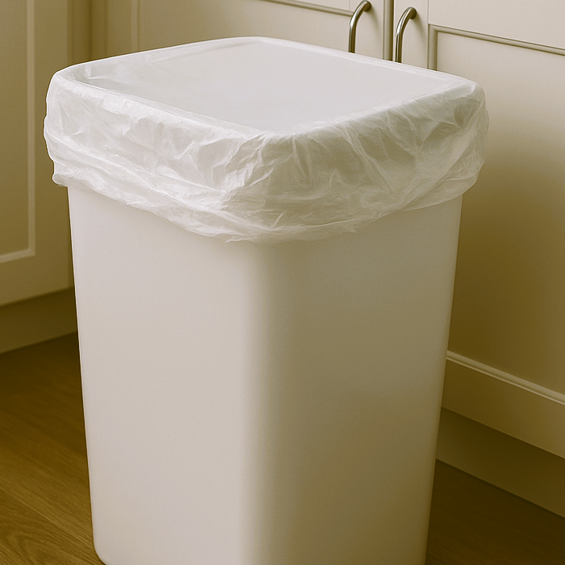

Apua! Kuinka poistaa viinitahra?
Punaviinitahran poistossa tärkeintä on nopea reagointi.
Vaiheet
- Imeytä viini paperilla
- Tapottele varovasti, älä hankaa.
- Ripottele suolaa tai ruokasoodaa tahralle ja anna sen imeytyä.
- Huuhtele runsaalla kylmällä vedellä.
Vinkki: Jos kyseessä on sohva tai matto, kokeile partavaahtoa tahralle. Anna vaikuttaa hetken ja huuhtele lopuksi kylmällä vedellä.
Vinkki: Vanhaan tahraan voi kokeilla ruokasoodatahnaa. Lisää ruokasoodaan hieman vettä, kunnes koostumus on tahnamainen. Levitä tahna tahralle, anna vaikuttaa ja huuhtele kylmällä vedellä.

Kuinka puhdistan valkoiset kengät?
Valkoiset kengät menettävät nopeasti raikkaan ilmeensä, mutta ne voidaan entisöidä kotikonstein.
Vaiheet
- Poista irtolika kopistelemalla kenkiä ja harjaamalla ne.
- Levitä hammastahnaa tai ruokasoodatahnaa likaisiin kohtiin.
- Harjaa kevyesti.
- Pyyhi kostealla liinalla.
- Anna kuivua ilmavasti.
Vinkki: Jotta kengät pysyy muodossaan, käytä erikseen tähän tarkoitettua välinettä tai laita kengän sisälle runsas määrä sanomalehtiä.
Vinkki: Nahkakengille käytä mietoa saippualiuosta ruokasoodatahnan tilalla. Sappisaippua on tähän erinomainen valinta!

Kuinka pääsen eroon hajuista roskakaapissa?
Roskis voi alkaa haista nopeasti, mutta pienillä kotikonsteilla sen saa pysymään raikkaana.
Vaiheet
- Ripota ruokasoodaa roskiksen pohjalle. Se imee hajuja ja kosteutta.
- Pyyhi roskis etikkavedellä, myös ulkopuolelta. Se desinfioi ja poistaa hajuja.
- Kuivaa huolellisesti.
- Tiputtele vanulappuun tuoksua esimerkiksi huonetuoksusta, hajuvedestä tai eteerisestä öljystä ja aseta vanulappu roskiksen pohjalle. Näin saat hyvän tuoksun roskikseen.
Vinkki: Voit myös käyttää sitruunaa tai sitruunan kuorta roskiksen raikastamiseen. Jos käytät sitruunan kuorta, muista vaihtaa se säännöllisesti.